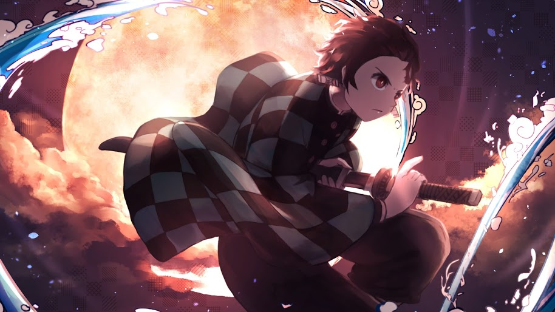
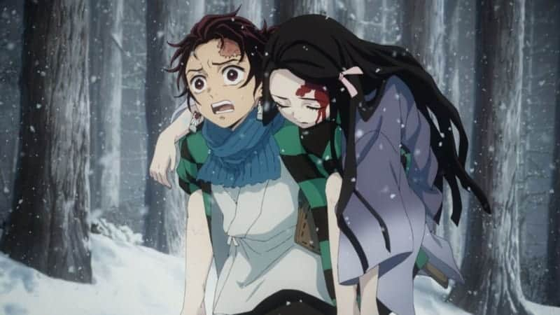
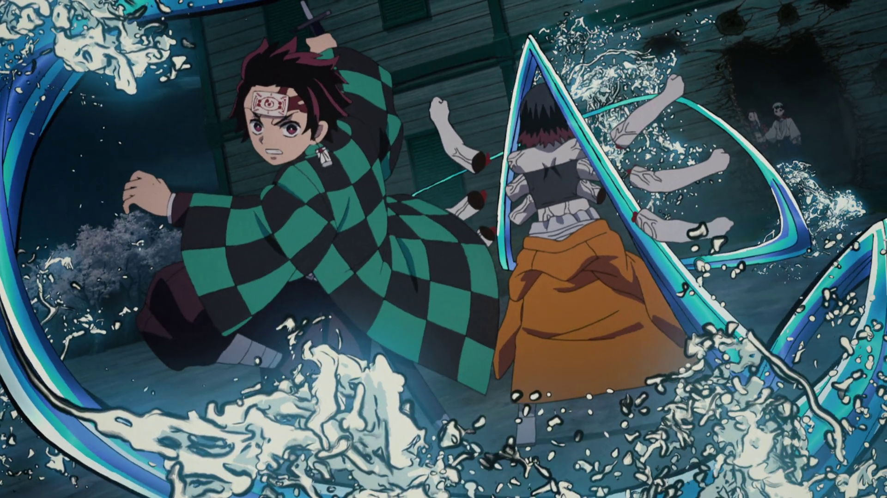

KIMETSU NO YAIBA - THE DEMON SLAYER
Tanjiro Kamado (竈門かまど炭たん治じ郎ろう Kamado Tanjirō?) is the main protagonist of the manga and anime, Demon Slayer: Kimetsu no Yaiba.
He is a Kanoe ranked Demon Slayer and a member of the Demon Killing Corps. He is hunting down the Demon who is
responsible for the murder of his family and his sister's transformation into one.
Appearance
Tanjiro has burgundy hair combed back and dark eyes with a scar on the top left
of his forehead. He wears long rectangular earrings with a sun symbol and a checkered black and green patterned
haori over the standard Demon Hunter uniform.
He carries around a wooden box where his sister sleeps during the day.
Personality
Tanjiro is kind by nature and has been described by others as having very gentle eyes. He has a great deal of determination and will not give up once he has a goal to achieve; an example is finding a cure for Nezuko. Even though he is relatively strong on his own, he isn't opposed to asking others for help when he needs it. He is very protective of his friends and even more so of his younger sister. His most important attribute is his ability to empathize with anyone, even demons. This often makes him hesitate when killing demons. However, this trait also could make some Demons to redeem themselves moments before death, albeit rarely. For the years of his service and amount of experience he faced, he became more calculating and strict in his decision. His courage to protect the weak committed him to face his enemy with respect and dignity whether good or evil demons.
Abilities and Powers

Natural Abilities
Enhanced Sense of Smell: Tanjiro has a heightened sense of smell even before he underwent sword training. It is strong enough for him to smell the 'line of interval'-- the slight pause in an enemy's movement-- and distinguish between species, as well as their approximate position. After training, he can smell emotions as well as track objects, humans and demons over long distances.
Fighting ability: This trait of Tanjiro's was pointed out by Giyuu Tomioka during their first encounter in which Tanjiro skillfully laid out a plan to attack Giyu by surprise by charging towards him not showing he was unarmed and plan to have brought down Giyu with an axe he had thrown in the air beforehand.
Enhanced strength: After training, Tanjiro gained immense strength and speed and has demonstrated a great use of it (i.e., Jumping over twice his height during the Final Selection arc when fighting the Demon who killed Urokodaki Sakonji's disciples. His forehead is sturdy as well, although this ultimately become one of the running gags in the series.
Swordsmanship
Breath of Water Style (水みずの呼こ吸きゅう Mizu no kokyū?): Taught to him by Urokodaki Sakonji, the Water Pillar before Giyu. The user can increase the amount of oxygen in one's blood by controlling his breathing pattern. This increases his strength and agility to equal a demon's.[5] Tanjiro has now learned to do full focus breaths at all times, further increasing his base strength, speed, and stamina. With this enhanced strength and ability to find the 'line of interval,' Tanjiro can utilize ten different moves:
First Style: Water Surface Slice (壱いちノ型かた 水みな面も斬ぎり Ichi no kata: Minamo giri?): A single concentrated slash[6]
Second Style: Water Wheel (弐にノ型かた 水みず車ぐるま Ni no kata: Mizu guruma?): Tanjiro jumps and spins his body while slashing.[7]
Second Style Modified: Horizontal Water Wheel (弐にノ型かた・改かい 横よこ水みず車ぐるま Ni no kata kai: Yoko mizu guruma?)[8] -
Third Style: Dance of the Rapid Current (参さんノ型かた 流りゅう流りゅう舞まい San no kata: Ryūryū mai?): Tanjiro swings his blade at his opponent in a way that mimics the movement of waves on the surface of water.[9]
Fourth Style: Striking Tide (肆しノ型かた 打うち潮しお Shi no kata: Uchishio?) - The swordsman makes multiple consecutive slashes while twisting their body in a flowing fashion similar to a harsh tide.[10]
Fifth Style: The Merciful Rain of a Dry Day/Blessed Rain After the Drought (伍ごノ型かた 干かん天てんの慈じ雨う Go no kata: Kanten no jiu?): A "sword strike of kindness" that beheads the target with little to no pain. Used when the enemy surrenders him/herself willingly.[11][12]
Sixth Style: Twisting Whirpool (陸ろくノ型かた ねじれ渦うず Roku no kata: Nejire uzu?): Tanjiro fiercely twists his upper and lower body, which creates a whirlpool that cuts anything caught in it.[13]
Sixth Style: Twisting Whirpool - Current (陸ろくノ型かた ねじれ渦うず・流りゅう流りゅう Roku no kata: Nejire uzu - ryūryū?)[14] -
Seventh Style: Piercing Rain Drop - A fast and accurate stab. The fastest Breath of Water technique.
Seventh Style: Piercing Rain Drop - Curve (漆しちノ型かた 雫しずく波は紋もん突づき・曲きょく Shichi no kata: Shizuku hamon tsuki - kyoku?)[15] -
Eight Style: Waterfall Jar (捌はちノ型かた 滝たき壷つぼ Hachi no kata: Takitsubo?): Tanjiro cuts the target vertically.[16]
Ninth Style: Water Splash (玖くノ型かた 水すい流りゅう飛沫しぶき Ku no kata: Suiryū shibuki?)
Ninth Style: Water Splash - Chaos (玖くノ型かた 水すい流りゅう飛沫しぶき・乱らん Ku no kata: Suiryū shibuki - ran?): Minimizes the landing time and surface needed when landing, allowing the user to move without limits. Ideal when fighting in a place with no solid foothold.[17]
Tenth Style: The Dragon of Change (拾じゅうノ型かた 生せい生せい流る転てん Jū no kata: Seisei ruten?): A constant attack that increases in power with each rotation, creating a strong slash.[18]
Dance of the Fire God (ヒノカミ神楽かぐら Hinokami Kagura?): Taught by Tanjiro's father. A breathing technique that increases the user's strength and endurance.
Waltz (円えん舞ぶ Enbu?): A single concentrated slash.[19]
Blue Heaven (碧へき羅らの天てん Heki-ra no ten?): A similar attack to "Water Wheel" in which Tanjiro spins his body to create a 360-degree slash.[20]
Flame Waltz (炎えん舞ぶ Enbu?): A two-combo strike which starts with a vertical slash and then a horizontal one right after.[21]
Waltz Flash: Tanjiro utilizes Zenitsu Agatsuma's "Thunderclap flash" and combines it with his "Flame Waltz" by pumping air through his entire body, focusing it on the legs, and releasing it all and ending with a flaming slash.
Solar Halo Dragon Dance: A combination attack utilizing Nezuko's Blood Burst, Tanjiro's sword adopts a crimson red colour and is coated in flames. While in this state, he circles the enemy in a pattern resembling a flaming dragon and slashes them multiple times and ultimately beheading them. He first used this on Urogi, Sekido, and Karaku.
Scorching Crimson Mirror (烈れつ日じつ紅こう鏡きょう Retsujitsu kōkyō?): Tanjiro unleashes two horizontal slashes that defend him from attacks from the front or side.[22]
Parhelion Rainbow (幻げん日にち虹こう Gen'nichi kō?): Tanjiro uses this technique to evade techniques using high-speed twists and rotations. It works most effectively on enemies with good vision as they will attack an afterimage of him and not his actual body.[23]
Fire Chariot (火か車しゃ Kasha?): Tanjiro uses this technique in quick succession with Parhelion Rainbow and attacks the enemy while they are distracted.[24]
Shining Sun Stab: A single thrust attack with the sharp blade.
Burning Sun (灼しゃっ骨こつ炎えん陽よう Shyakkotsu en'yō?): A circular slash that defends from imminent frontal attacks.[25]
Ability to See-Through: Like his father, he finally gained the ability to foresee the opponent's attack while showing no battle spirit and sense of blood-lust, empowering his opponent with no rust.